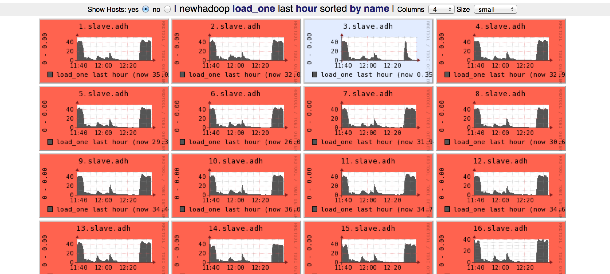
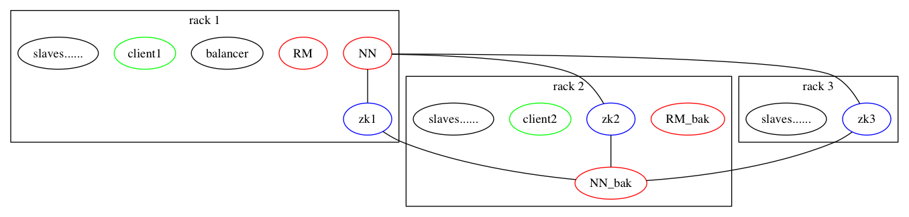
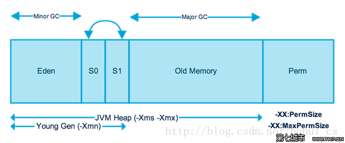

打造稳定高效的 hadoop 平台
刘喆
2015-02-26
目录
- hadoop 调整的原则
- 辅助工具
- 推荐的角色设置
- 硬件/网络关注点
- OS/JVM 关注点
- hadoop 各角色关注点
- 其它环境
- beyond hadoop
- 后语
hadoop 调整的原则
- 数据导向，不要猜
- 宁死勿慢 （木桶效应）
- 一切都有可能坏，要有备案
辅助工具
- ganglia （一眼就能看出哪个机器有问题）

- pdsh
- jinfo
- jstack
- jmap/jhat
推荐的角色设置

- Namenode 和 ResourceManager 各 1 个 （必须）
- Namenode HA / Secondary Namenode 1 个（必须）
- Balancer 1 个（必须）
- ResourceManager HA 1 个 (可选）
- Clients 越少越好 （必须）
- Datanode/Nodemanager 同机配置
硬件/网络关注点
- all
- dns or hosts
- time ntp
- 网卡不要自适应，非 1000M，宁可不工作
- ResourceManager
- 无特殊要求，除非有数据表明内存不够，要加内存
- 主备机摆放位置越近越好，但主备机不要放在同一个机架
- Balancer / Clients
- Datanode/Nodemanager
- 摆放位置离 Namenode 和 ResourceManager 越近越好
- cpu、内存、网卡、硬盘 的配置最好是一致的，不一致则需要分开配置
- cpu/内存/网卡带宽/硬盘容量 4 者最好是相匹配的，这里注意木桶效应
- 最好不要跨核心交换机，如果一定要跨，需要保证交换机间的带宽（交换机数据）
OS 关注点
- 操作系统推荐用 centos 稳定版本，最好统一
- 操作系统参数
- open files
- max proc
- mem overcommit
- hugepage
JVM 关注点
- jdk 用 oracle 统一版本，推荐 7
- 一定不要开 swap， 宁可 OOM， 不要开 swap
- gc 启动参数非常重要，最关键的是 -XX:+UseConcMarkSweepGC， 或者也可以尝试 jdk 7 中新加的 G1
- 打开 -XX:+PrintGCDetails，或者打到 ganglia， 方便分析 GC 行为

hadoop 各角色关注点
- Namenode
- 一定要设置 3 副本， 2 副本是不安全的
- 一定要设置 trash
- topology.script.file.name 数据更安全，访问更迅速（错了就。。。。）
- dfs.hosts 阻止异常或故意的闯入者
- ResourceManager
- topology.script.file.name 访问更迅速（错了就。。。。）
- yarn.resourcemanager.nodes.include-path 阻止异常或故意的闯入者
- Namenode HA / Secondary Namenode
- Datanode
- dfs.datanode.max.xcievers dfs.datanode.max.transfer.threads 8192
- Nodemanager
- 最容易坏的是硬盘，sata 2/1000 每天
- 最容易出的问题是 OOM，加上 cgroup 会好很多
- yarn.nodemanager.health-checker.script.path 把知识固化的地方
- yarn.nodemanager.resource.cpu-vcores 控制 slot 数
- yarn.nodemanager.resource.memory-mb
- yarn.nodemanager.local-dirs yarn.nodemanager.log-dirs 多盘分散读写压力
- Balancer
- Clients
- hadoop 版本要一致
- 如果没有特殊的需求，只需要 core-site.xml 配置 NN 和 RM 就可以了，多了就享受不到集群整体的优化
其它环境
- lzo
- other used libs (python, ruby, pdf, libxml...)
optional
- 机架感知
- 预测执行
- 好处是什么
- 坏处？什么时候不能用
- 多路输出
- task 除了把输入转化为输出，还做了其它非"幂等"的功能，或需要同步的功能
- GC
后语
- 文档是不可以执行的，把你的知识固化到可执行的程序里
- 我们的知识总是会过时的，或早或晚
- 方法却一直没有变过：抽象、组合、类比
- 学习不变的，忘掉常变化的